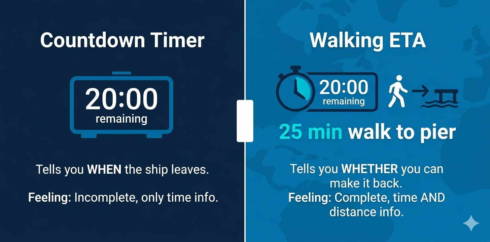

Royal Caribbean just rolled out a new feature in their app: a countdown timer that alerts passengers as all-aboard time approaches in port. It's a smart move, and it signals something important — the cruise industry is starting to take the pier runner problem seriously.
For years, the approach to passengers missing the ship has been the same: post the all-aboard time on signs, announce it over the PA, print it in the daily schedule, and hope for the best. When passengers still miss the ship, the response has been equally consistent — the ship leaves without them.
Royal Caribbean's countdown timer is a meaningful step forward. It puts the urgency directly in the passenger's hand, on the device they're already carrying. No more guessing what time zone the ship is on. No more confusing departure time with all-aboard time. The timer counts down, the passenger sees it, and they know they need to move.
But there's a gap.
A Timer Tells You When. It Doesn't Tell You Whether.
A countdown timer answers one question: how much time do I have? It doesn't answer the question that actually determines whether a passenger makes it back: can I get there in time?
Picture this: a passenger is exploring a port town. They glance at the countdown timer — 20 minutes until all-aboard. Seems fine. What they don't know is that they're a 25-minute walk from the pier. The timer ticks down, but it can't tell them they're already too late to walk back at a normal pace. By the time they realize they're cutting it close, they're running — or they're not making it at all.
This is the core limitation. A timer without distance context is a clock, not a safety system. It tells you the deadline, but it doesn't tell you whether your current location allows you to meet it.

The Next Step: Walking ETAs That Work Offline
The real solution is giving passengers a live answer to "can I make it back?" — not based on time alone, but based on where they actually are and how long it takes to walk back to the pier from that location.
That's what we're building at ShipSafe. Our SDK gives cruise line apps accurate walking ETAs back to the ship, updated in real time as the passenger moves. And critically, it works offline — because in most cruise ports, reliable cellular connectivity is exactly what passengers don't have.
When the walking ETA exceeds the time remaining before departure, the system doesn't just show a number. It escalates. Gentle nudge when there's plenty of time. Firm alert when it's getting tight. Urgent alarm when the math stops working in the passenger's favor.
Why This Matters for the Industry
Royal Caribbean adding a countdown timer isn't just a product update. It's a signal that the largest cruise line in the world considers passenger return logistics a problem worth solving with technology.
We agree. And we think the industry is just getting started.
The countdown timer is version one. Walking ETAs with escalating alerts is version two. The cruise lines that adopt this next generation of passenger safety technology will reduce delayed departures, lower operational costs, and — most importantly — stop stranding their guests in foreign ports.
We're looking forward to the conversations at Seatrade Cruise Global in Miami next month about where this technology goes from here.
If your cruise line is thinking about this problem, we'd love to talk: kali@shipsafesdk.com
ShipSafe SDK gives cruise line apps accurate offline walking ETAs and escalating alerts to prevent pier runner incidents.
Learn more about ShipSafe SDK →